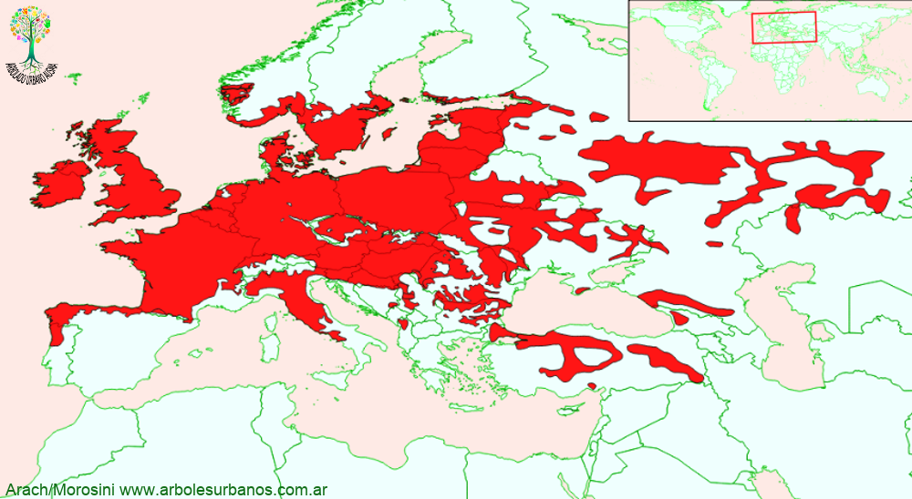

Click en las imágenes para ampliar

{kind=link}
{kind=link}
{kind=link}
{kind=link}
{kind=link}
- NOMBRE CIENTÍFICO
- Quercus Robur
- FAMILIA BOTÁNICA
- Fagáceas
- DESCRIPCIÓN GENERAL
- Esta especie de gran porte, comúnmente llega a los 35 metros, pero puede llegar incluso a los 50 metros de altura. Copa amplia e irregular. Corteza grisácea y lisa en la juventud, parda- oscura en la madurez del ejemplar. Sus hojas son simples, elípticas- aovadas de hasta 12 cm. de largo, tienen entre 3 y 6 lóbulos de cada lado, separados por huecos redondeados. Su color es verde brillante en la cara superior y más clara en la inferior. Presentan pubescencias al salir en primavera, luego son glabras
- FLORES
- Las flores masculinas y femeninas se presentan en amentos separados en el mismo pie. Florecen a finales de primavera.
- FRUTOS
- El fruto es una bellota de hasta 4 cm. de largo unido a la planta por una cúpula.
- ORIGEN
- De amplia distribución natural: Islas Británicas, norte de la Península Ibérica, sur de Península Escandinava, centro de Europa hasta los Urales.
- USOS
- Su madera es duradera, de muy buena calidad. Utilizada en tanto en construcciones navales como civiles, en mueblería, tonelería, ebanistería, carpintería, etc. Las bellotas se usan como forraje para animales, que en otras épocas (siglos XVII y XVIII) llegó a poner en peligro de extinción la especie en el centro de Europa
- REPRODUCCIÓN
- Su propagación es principalmente por semillas. Las bellotas tienen, en general, muy buen poder germinativo.
- PARTICULARIDADES
- Es el roble más común de Europa. Es una especie longeva superando los 700 años de edad. Existen diversos cultivares y formas que presentan distintas coloraciones de follajes, como por ejemplo “Atropurpúrea” cuyas hojas jóvenes son de color purpúreas, o la “ Concordia” donde las hojas primaverales son de color amarillo vivo.